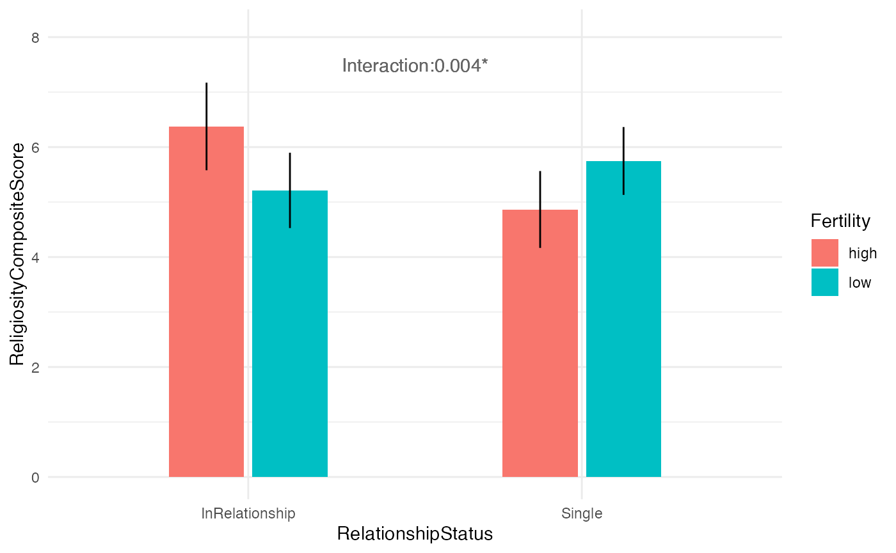

Exporting the output of a multiverse to JSON for Milliways, a multiverse visualisation tool
Abhraneel Sarma
2024-08-03
Source:vignettes/export-milliways.Rmd
export-milliways.RmdIntroduction
The correct interpretation of a multiverse analysis can be difficult due to their potential size and the complexity of correctly interpreting their uncertainty. Our recent work in developing Milliways, an interactive visualisation interface for the principled evaluation and interpretation of the results of multiverse analysis aims to address this problem. For more details, please refer to our paper.
Milliways
To visualise the results of a multiverse analysis using Milliways, the user needs to provide four files:
-
results: a JSON file which contains the estimates from each universe in the multiverse analysis. -
code: a JSON file which contains the code used to generate the multiverse object. -
data: a JSON file which contains the dataset used in the multiverse analysis. -
analysis: an HTML file which contains the entire analysis as an Explorable Multiverse Analysis Report (EMAR).
In this document, I outline how to generate each of these files for
the multiverse analysis on the Durante dataset (see
vignette("visualising-multiverse")). Compiling this
document will, by itself, result in the creation of the EMAR,
provided:
- the
knit_as_emar()function is declared, and - the document YAML (at the top of the markdown file) is set to
output: html_document
The actual EMAR document which is generated from this file (provided the YAML is changed) can be found here.
Note #1: Creating an EMAR document is not a perfect
process unfortunately, and relies on the HTML tags that
knitr uses to convert a RMarkdown file to an HTML file. We
created the knit_as_emar() function assuming users will
compile using the default YAML (output: html_document) that
is generated when a new RMarkdown file is created using RStudio.
However, the knit_as_emar() function may not be compatible
with other output formats, such as this one which uses the
html_vignette format. I have also marked the multiverse
code chunks using a comment to distinguish them from regular R code
chunks. However, if you are knitting as an EMAR, the multiverse code
chunks will appear with a different background colour to the regular
code chunks making them easily distinguishable.
Note #2: If compiling the document as an EMAR, each
code chunk will execute automatically. You do not need to call
execute_multiverse() to obtain the results unless you want
to extract the results and access it from an R code chunk.
Note #3: If you are not compiling the document as an
EMAR, the code chunks will not execute automatically. The only way to
obtain the results is to first execute all the universes in the
multiverse using execute_multiverse() and then accessing
the results using an R code chunk.
Note #4: On the use of magrittr pipes
(%>%) instead of the native R pipe (|>).
Because multiverse rewrites R expressions, when I parse the
code declared into individual R scripts, the native R pipe is
“evaluated” (i.e. df |> mutate(...) |> filter(...)
becomes filter(mutate(df, ...), ...)); this makes the code
readable. Instead I use magrittr pipes which does not “evaluate” the R
expressions.
Analysis
The analysis follows the same steps outlined in
vignette("example-durante"). The first step is to read the
raw data from the file and store it as a tibble.
data("durante")
data.raw.study2 <- durante %>%
mutate(
Abortion = abs(7 - Abortion) + 1,
StemCell = abs(7 - StemCell) + 1,
Marijuana = abs(7 - Marijuana) + 1,
RichTax = abs(7 - RichTax) + 1,
StLiving = abs(7 - StLiving) + 1,
Profit = abs(7 - Profit) + 1,
FiscConsComp = FreeMarket + PrivSocialSec + RichTax + StLiving + Profit,
SocConsComp = Marriage + RestrictAbortion + Abortion + StemCell + Marijuana
)
M = multiverse()Cycle Length
In their Durante et al. exclude participants based on the length of their menstrual cycle, and only include those whose cycle lengths are between 25 and 35 days. However, according to Steegen et al., due to the flexibility in the data collection, “this exclusion criterion can be instantiated in two reasonable ways, using either a woman’s computed cycle length or a woman’s self-reported typical cycle length.”
Note #5: we can define a tangle widget to allow the
user to switch between which operationalisation of the outlier exclusion
criteria is used using the syntax
<mv param="cycle_length"/>. Here,
cycle_length can be replaced with the name of any
parameter. In the EMAR document, you can see and interact with the
tangle widget. We have removed them in this document as they do not get
rendered properly when compiling to a vignette.
# multiverse code block
df <- data.raw.study2 %>%
mutate(ComputedCycleLength = StartDateofLastPeriod - StartDateofPeriodBeforeLast) %>%
filter(branch(
cycle_length,
"cl_option1" ~ TRUE,
"cl_option2" ~ ComputedCycleLength > 25 & ComputedCycleLength < 35,
"cl_option3" ~ ReportedCycleLength > 25 & ReportedCycleLength < 35
))Certainty
Steegen et al. describe that how certain the participants are in their reported dates can be another justifiable exclusion criteria:
Menstrual Calculation
The flexibility in how the data is collected also allows three reasonable alternatives for estimating a woman’s next menstrual onset, which is an intermediate step in determining cycle day.
# multiverse code block
df <- df %>%
mutate(NextMenstrualOnset = branch(
menstrual_calculation,
"mc_option1" ~ StartDateofLastPeriod + ComputedCycleLength,
"mc_option2" %when% (cycle_length != "cl_option2") ~ StartDateofLastPeriod + ReportedCycleLength,
"mc_option3" ~ StartDateNext
)) %>%
mutate(
CycleDay = 28 - (NextMenstrualOnset - DateTesting),
CycleDay = ifelse(WorkerID == 15, 11, ifelse(WorkerID == 16, 18, CycleDay)),
CycleDay = ifelse(CycleDay > 1 & CycleDay < 28, CycleDay, ifelse(CycleDay < 1, 1, 28))
)Fertility
Durante et al. classify women into a high or low fertility group based on cycle day, but this classification can be done in various different reasonable ways:
# multiverse code block
df <- df %>%
mutate(Fertility = branch(
fertile,
"fer_option1" ~ factor(ifelse(CycleDay >= 7 & CycleDay <= 14, "high", ifelse(CycleDay >= 17 & CycleDay <= 25, "low", NA))),
"fer_option2" ~ factor(ifelse(CycleDay >= 6 & CycleDay <= 14, "high", ifelse(CycleDay >= 17 & CycleDay <= 27, "low", NA))),
"fer_option3" ~ factor(ifelse(CycleDay >= 9 & CycleDay <= 17, "high", ifelse(CycleDay >= 18 & CycleDay <= 25, "low", NA))),
"fer_option4" ~ factor(ifelse(CycleDay >= 8 & CycleDay <= 14, "high", "low")),
"fer_option5" ~ factor(ifelse(CycleDay >= 8 & CycleDay <= 17, "high", "low"))
))Relationship Status
The participants in the study described their relationship status as one of the following options: (1) not dating/romantically involved with anyone, (2) dating or involved with only one partner, (3) engaged or living with my partner, and (4) married. This allows various different ways of classifying whether a participants is in a relationship or not:
# multiverse code block
df <- df %>%
mutate(RelationshipStatus = branch(
relationship_status,
"rs_option1" ~ factor(ifelse(Relationship == 1 | Relationship == 2, "Single", "Relationship")),
"rs_option2" ~ factor(ifelse(Relationship == 1, "Single", "Relationship")),
"rs_option3" ~ factor(ifelse(Relationship == 1, "Single", ifelse(Relationship == 3 | Relationship == 4, "Relationship", NA)))
)) %>%
mutate(RelComp = round((Rel1 + Rel2 + Rel3) / 3, 2))Regression Model
The authors perform an ANOVA to study the effect of
Fertility, Relationship and their interaction term, on
the composite Religiosity score. We fit the linear model using the call:
lm( RelComp ~ Fertility * RelationshipStatus, data = df )
inside our multiverse and save the result to a variable called
fit_RelComp. We use broom::tidy to extract the
results of the linear model into a tidy data frame.
fit_RelComp <- lm(RelComp ~ Fertility * RelationshipStatus, data = df)
summary_RelComp <- fit_RelComp %>%
broom::tidy(conf.int = TRUE)
summary_RelComp## # A tibble: 4 × 7
## term estimate std.error statistic p.value conf.low conf.high
## <chr> <dbl> <dbl> <dbl> <dbl> <dbl> <dbl>
## 1 (Intercept) 6.37 0.405 15.8 4.02e-41 5.58 7.17
## 2 Fertilitylow -1.16 0.534 -2.18 3.02e- 2 -2.21 -0.112
## 3 RelationshipStatusSi… -1.51 0.538 -2.80 5.38e- 3 -2.57 -0.450
## 4 Fertilitylow:Relatio… 2.05 0.714 2.87 4.46e- 3 0.640 3.45Visualising the Results
We visualise the results by showing the predicted values of the
model. The plot below shows the predicted Religiosity Score
for each level of Fertility (high or low) and
RelationshipStatus (Single or Relationship):
p_val <- round(summary(fit_RelComp)$coefficients[4, 4], 3)
if (p_val < 0.05) p_val <- paste0(p_val, "*")
broom::augment(fit_RelComp, interval = "confidence") %>%
group_by(Fertility, RelationshipStatus) %>%
mutate(RelationshipStatus = ifelse(RelationshipStatus == "Relationship", "InRelationship", "Single")) %>%
summarise(.fitted = mean(.fitted), .upper = mean(.upper), .lower = mean(.lower), .groups = "drop") %>%
ggplot(aes(x = RelationshipStatus, y = .fitted, fill = Fertility)) +
geom_bar(stat = "identity", position = position_dodge2(preserve = "single"), width = 0.5) +
geom_linerange(aes(ymin = .lower, ymax = .upper), position = position_dodge(width = 0.5)) +
geom_text(label = paste0("Interaction:", p_val), x = 1.5, y = 7.5, colour = "#666666") +
labs(x = "RelationshipStatus", y = "ReligiosityCompositeScore") +
ylim(c(0, 8.1)) +
theme_minimal()
Note #6: due to the issues with compiling in the RMarkdown vignette output format, we only present the results from the default universe.
Exporting the JSON files
The current section describes how the remaining three JSON files can
be created. If you haven’t already, the first step would be to execute
all the analyses declared in the multiverse using
execute_multiverse():
We can then use dedicated functions for each of the JSON files: -
export_results_json or
export_results_dist_json. -
export_code_json
Exporting the results
We provide two functions to export the results:
export_results_json and
export_results_dist_json. export_results_json
requires the user to specify the following arguments:
-
term: column name which contains the names of the outcome variables. For example, in the case of a regression, you could use the output of broom::tidy() and thus the argument would be the column which contains the coefficient names. -
estimate: column name containing the mean / median point estimates for each outcome. -
standard error: column name containing the standard errors for each outcome. -
dist: column name containing distributional objects for each outcome variable. Optional only ifestimateandstandard errorarguments are provided. See below for more details. - (optional)
filename: if specified, the function will create a file in the specified path; if not specified, it will return the dataframe as shown below:
expand(M) %>%
extract_variables(summary_RelComp) %>%
unnest( cols = c(summary_RelComp) ) %>%
mutate( term = recode( term,
"RelationshipStatusSingle" = "Single",
"Fertilitylow:RelationshipStatusSingle" = "Single:Fertility_low"
)) %>%
export_results_json(term, estimate, std.error) |>
unnest(results) |>
select(.universe, term, estimate, std.error, cdf.x, cdf.y)## # A tibble: 960 × 6
## .universe term estimate std.error cdf.x cdf.y
## <int> <chr> <dbl> <dbl> <list> <list>
## 1 1 (Intercept) 6.37 0.405 <dbl [101]> <dbl [101]>
## 2 1 Fertilitylow -1.16 0.534 <dbl [101]> <dbl [101]>
## 3 1 Single -1.51 0.538 <dbl [101]> <dbl [101]>
## 4 1 Single:Fertility_low 2.05 0.714 <dbl [101]> <dbl [101]>
## 5 2 (Intercept) 5.78 0.322 <dbl [101]> <dbl [101]>
## 6 2 Fertilitylow -0.583 0.428 <dbl [101]> <dbl [101]>
## 7 2 Single -0.859 0.583 <dbl [101]> <dbl [101]>
## 8 2 Single:Fertility_low 1.85 0.772 <dbl [101]> <dbl [101]>
## 9 3 (Intercept) 6.37 0.402 <dbl [101]> <dbl [101]>
## 10 3 Fertilitylow -1.16 0.531 <dbl [101]> <dbl [101]>
## # ℹ 950 more rowsThe resultant JSON file consists of a list of objects (where each object corresponds to one analysis in the multiverse). Within this object, the results attribute contains a(nother) list of objects corresponding to each outcome variable. For e.g., here we have four coefficients (see the results of the regression model), and thus the results attribute will contain four objects. Each object has the following attributes:
-
term: name of the outcome variable -
estimate: mean / median point estimate i.e., \(\mathbb{E}(\mu)\) for any parameter \(\mu\). -
std.error: standard error for the point estimate i.e., \(\sqrt{\text{var}(\mu)}\) -
cdf.x: a list of quantiles -
cdf.y: a list of cumulative probability density estimates corresponding to the quantiles
In addition, it also contains the following attributes, but these are not currently used by Milliways:
statisticp.valueconf.lowconf.high
A Note on Distributional Assumptions
For simplicity, we assume that each of the outcome variables follow a
normal distribution. However, this may not always be the case. In this
case, we recommend that you should specify the dist
argument to export_results_json or use the
export_results_dist_json which allows you to specify distributional
objects for each outcome. We demonstrate how a user can do this with the
following example of a multiverse analysis where the results consists of
two parameters: \(\mu \sim \text{N}(0,
1)\), a normally distributed random variable and \(\sigma \sim \text{exp}(1)\), a random
variable which follows the exponential distribution.
expand_grid(
.universe = seq(1:5),
nesting(
term = c("mu", "sigma"),
dist = c(dist_normal(0, 1), dist_exponential(1))
)
) |>
export_results_dist_json(term, dist) |>
unnest(results)## # A tibble: 10 × 5
## .universe term dist cdf.x cdf.y
## <int> <chr> <dist> <list> <list>
## 1 1 mu N(0, 1) <dbl [101]> <dbl [101]>
## 2 1 sigma Exp(1) <dbl [101]> <dbl [101]>
## 3 2 mu N(0, 1) <dbl [101]> <dbl [101]>
## 4 2 sigma Exp(1) <dbl [101]> <dbl [101]>
## 5 3 mu N(0, 1) <dbl [101]> <dbl [101]>
## 6 3 sigma Exp(1) <dbl [101]> <dbl [101]>
## 7 4 mu N(0, 1) <dbl [101]> <dbl [101]>
## 8 4 sigma Exp(1) <dbl [101]> <dbl [101]>
## 9 5 mu N(0, 1) <dbl [101]> <dbl [101]>
## 10 5 sigma Exp(1) <dbl [101]> <dbl [101]>Exporting the Code
Exporting the code file is relatively simple as the only arguments that need to be provided are the multiverse object and file path:
export_code_json(M, "code.json")The JSON file consists of two attributes: code and
parameters. code is a list of strings
consisting of the R and multiverse syntax used to implement the
analysis. For readability, we use styler to break up the declared
code. parameters is an object listing the parameter names
and the corresponding options for each of the parameters declared in the
analysis.
Exporting the Dataset
This function is used to export the (unmodified) dataset that is used
in the analysis, and is a simple wrapper around the
write_json function.
export_data_json(durante, "data.json")The JSON file consists of a list of objects, each with two
attributes: field and values.
field is the name of a column corresponding to a variable
in the dataset. values are a list of values for that
variable in the dataset.